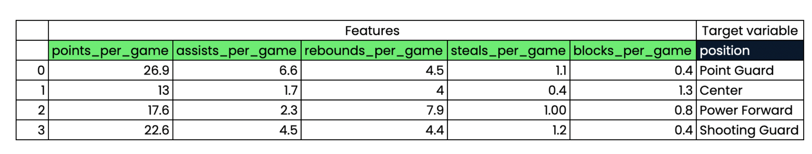
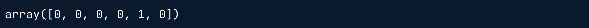
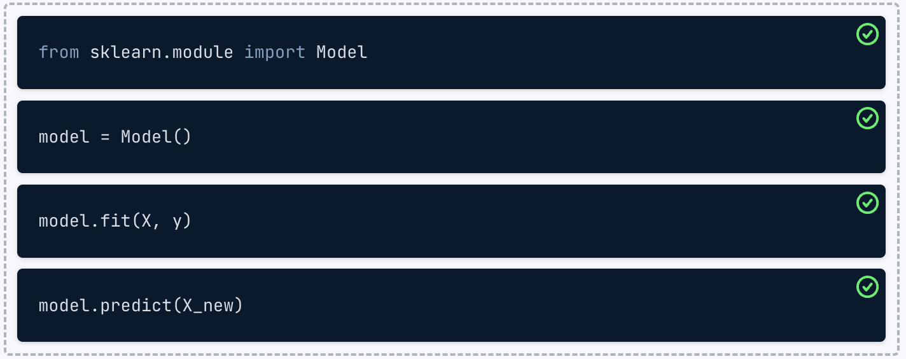
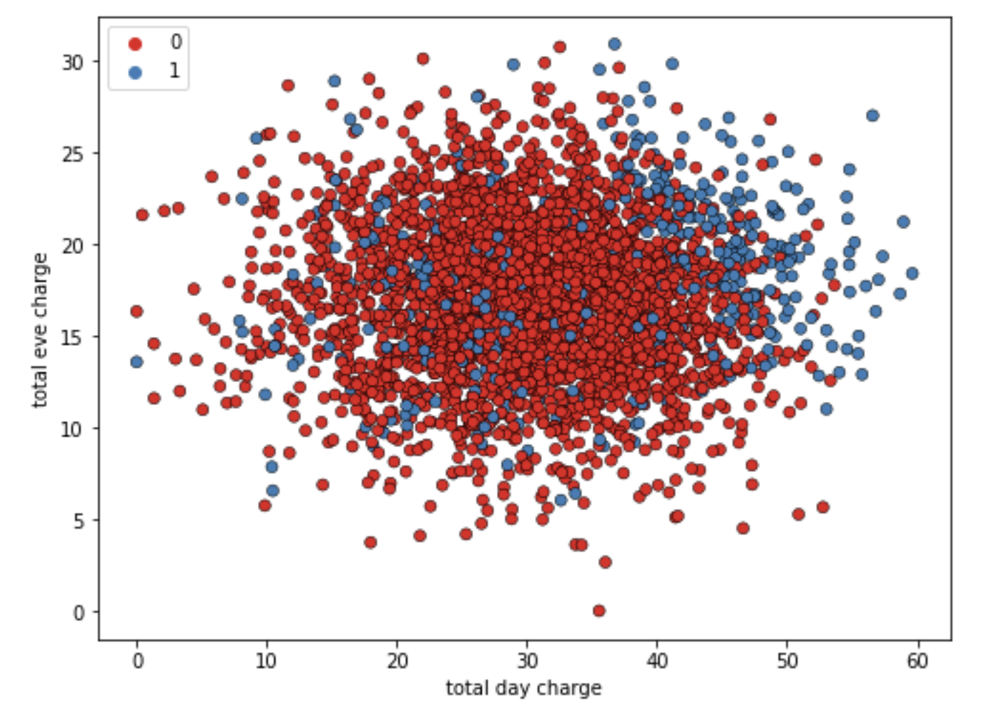
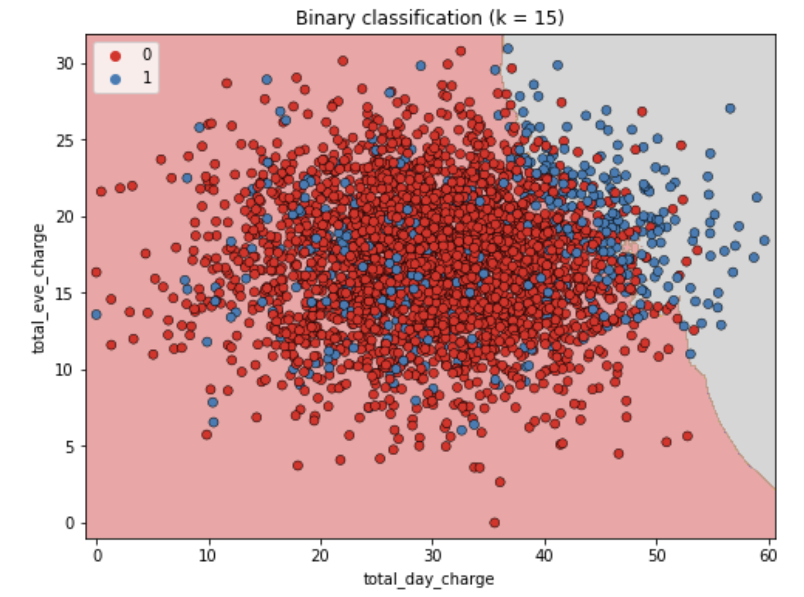

from sklearn.module import Model
model = Model()
model.fit(X, y)
predictions = model.predict(X_new)
print(predictions)Clasificación
En este capítulo, se te presentarán los problemas de clasifiación y aprenderás a resolverlos mediante técnicas de aprendizaje supervisado. Aprenderás a dividir los datos en conjuntos de entrenamiento y de prueba, ajustar un modelo, hacer predicciones y evaluar la precisión. Descubrirás la relación entre la complejidad del modelo y el rendimiento, aplicando lo que aprendas a un conjunto de datos de rotación, donde clasificarás el estado de rotación de los clientes de una empresa de telecomunicaciones.
Machine learning con scikit-learn
¿Qué es el machine learning?
- Es el proceso mediante el cual:
- Se da a los ordenadores la capacidad de aprender a tomar decisiones a partir de datos.
- ¡Sin haber sido programados explícitamente!
- Es el proceso mediante el cual:
Ejemplos de machine learning
- Clasificación de correos de spam o no en relación al contenido y su remitente.
- Agrupar libros por categorías en función de las palabras que contiene.
Aprendizaje no supervisado
- Descubrir patrones ocultos a partir de datos no etiquetados.
- Ejemplo
Agrupar a los clientes en categorías distintas (agrupación en clústeres)

Aprendizaje supervisado
Los valores previstos son conocidos.
Objetivo: predecir los valores objetivo de los datos no vistos, dadas las características.

Tipos de aprendizaje supervisado
Clasificación: La variable objetivo consta de categorías.
Ejemplo: Predecir si una transferencia bancaria es fraudulenta o no.
Regresión: La variable objetivo es continua.
Ejemplo: Un modelo puede utilizar características como el número de habitaciones y el tamaño de una propiedad para predecir el precio de la propiedad.
Convenciones de denominación
Característica = variable predictora = variable independiente
Variable objetivo = variable dependiente = variable de respuesta
Antes de utilizar el aprendizaje supervisado
- Requisitos:
- Que no falten valores.
- Que los datos esten en formato numérico.
- Que los datos esten almacenados en un DataFrame de pandas o en una matriz de Numpy.
- Hay que realizar primero un análisis exploratorio de datos (AED)
- Requisitos:
Sintaxis de scikit-learn
- Scikit-learn sigue la misma sintaxis para todos los modelos de aprendizaje supervisado lo que hace que el flujo de trabajo sea reproducible.

Clasificación binaria
Hay dos tipos de aprendizaje supervisado: clasificación y regresión. La clasificación binaria se utiliza para predecir una variable objetivo que solo tiene dos etiquetas, normalmente representados numéricamente con un cero o un uno.
A continuación se muestra la página .head() de un conjunto de datos churn_df. Puedes esperar que el resto de los datos contengan valores similares.

Observando estos datos, ¿Qué columna podría ser la variable objetivo de la clasificación binaria?
Respuestas posibles
churn tiene valores de 0 y 1, por lo que se puede predecir utilizando un modelo de clasificación binaria.
El flujo de trabajo del aprendizaje supervisado
Recuerda que sckikit-learn ofrece un flujo de trabajo repetible para utilizar modelos de aprendizaje supervisado con el fin de predecir los valores de la variable objetivo cuando se presentan nuevos datos.
Reordena el pseudocódigo proporcionado para que represente con precisión el flujo de trabajo de construir un modelo de aprendizaje supervisado y hacer predicciones.
Instrucciones
Arrastra los bloques de código en el orden correcto para representar cómo se ejecutaría el flujo de trabajo de aprendizaje supervisado.

Puedes ver cómo scikit-learn permite hacer predicciones ¡con solo unas pocas líneas de código!
El reto de la clasificación
- Clasificar etiquetas de datos no vistos
Se construye un modelo.
El modelo aprende de los datos etiquetados que le pasamos.
Le pasamos datos no etiquetados al modelo como entrada.
El modelo predice las etiquetas de los datos no vistos.
- Datos etiquetados = datos de entrenamiento
- K vecinos más cercanos (KNN)
- Predecir la etiqueta de un punto de datos:
- Observando los
kpuntos de datos etiquetados más cercanos. - Utilizando el voto por mayoría.
- Observando los
- Predecir la etiqueta de un punto de datos:
| si k = 3 | si k = 5 |
 |
 |
| Se clasificaría como roja | Se clasificaría como azul |
Intuición KNN
Se muestra un gráfico de dispersión que muestra la tarifa nocturna total frente a la tarifa diaria total de los clientes de una empresa de telecomunicaciones. Azul representa a los clientes que se han dado de baja y los de rojo a los que no.
  KNN crea un límite de decisión para predecir si los clientes se darán de baja. Se prevee que los clientes en la franja con fondo gris, se darán de baja.
Utilizar scikit-learn para ajustar un clasificador
from sklearn.neighbors import KNeighborsClassifier X = churn_df[["total_day_charge", "total_eve_charge"]].values y = churn_df["churn"].values print(X.shape, y.shape)
knn = KNeighborsClassifier(n_neighbors=15) knn.fit(X, y)